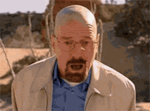

Breakin Bad
Walter White tem uma vida ruim. e descobre que tem câncer, ja cagando e andando pra vida, desite fazer metanfetamína para ganhar dinheiro
Pontos positivos: Tem chanche de aprender a como fazer metanfetamína
Pontos negativos: Gustavo morre
Nota: 4 de 5 Motivo: O seria do é bom, mas a unica coisa que nçao deixa ele ser 5 de 5 é o fato que você não pode fazer a metanfetamína na vida real